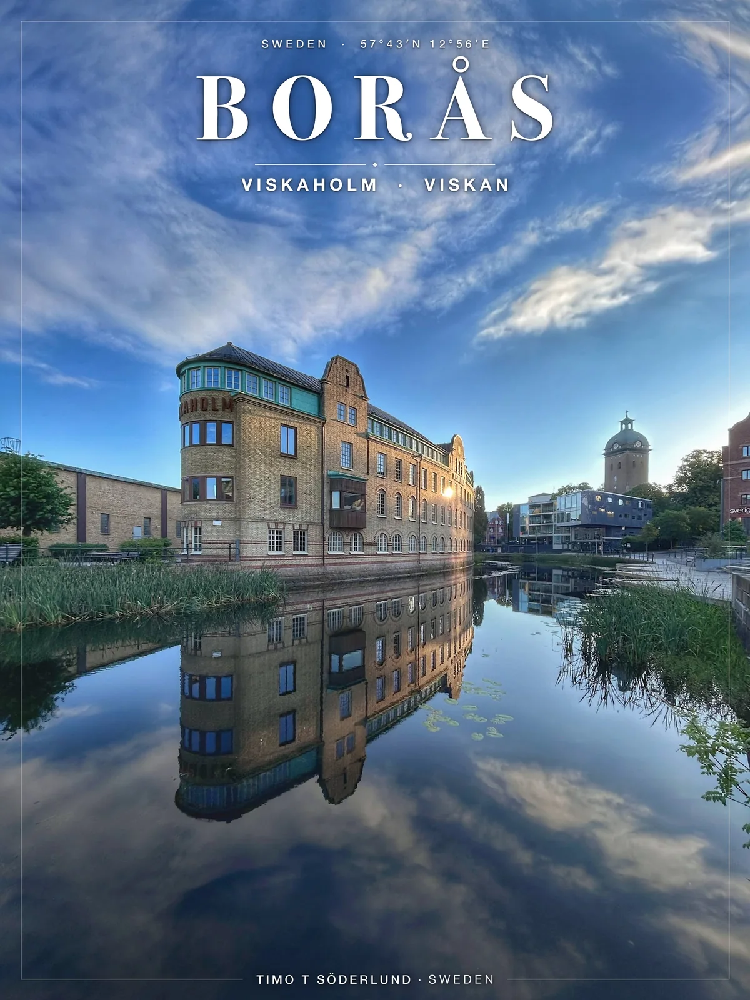

Viskaholm · Viskan
Viskaholm & Caroli Tower in Morning Light · Borås, Sweden
English
About an hour after sunrise, crisp early-morning sunlight glints off the windows of historic Viskaholm while the copper-domed tower of Caroli Church rises in the distance in central Borås, Sweden. Framed by riverside reeds and water lilies, the entire scene reflects cleanly in the still Viskan river. Created by Timo T Söderlund for Borås Poster Project 2026 in Boras, Sweden.
Svenska
Tidigt på morgonen, omkring en timme efter solens uppgång, blänker det klara morgonljuset i fönstren på historiska Viskaholm medan Caroli kyrkas kyrktorn med koppartak reser sig i bakgrunden i centrala Borås. Inramad av vass och näckrosblad speglas hela vyn i den lugna Viskan. Skapad av Timo T. Söderlund för Borås Poster Project 2026.
Photographer & Edition: Timo T Söderlund · Borås, Sweden (2026)